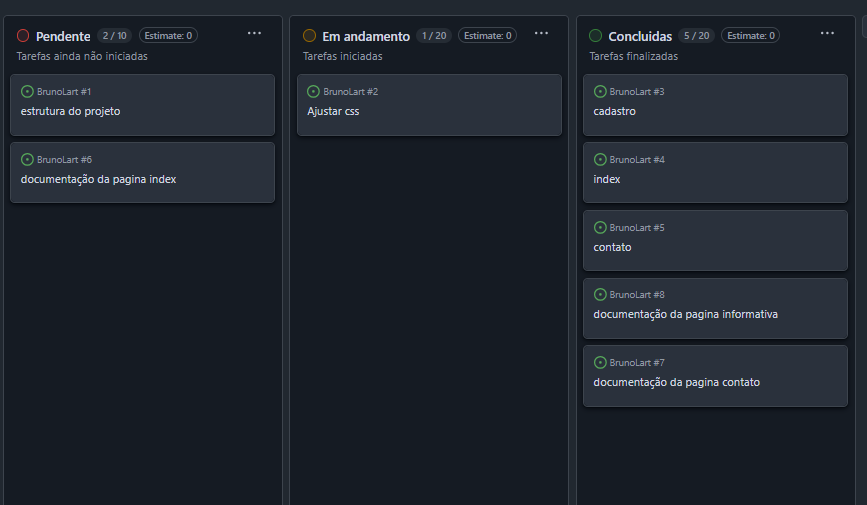

Organização do Projeto: Patinhas Felizes 🐾
Uma visão geral de como nosso time colaborou para construir o site da ONG, utilizando Git e GitHub.
Sobre o Projeto
O "Patinhas Felizes" é um site institucional fictício para uma ONG de resgate de animais. O principal objetivo do projeto foi servir como uma atividade prática de Desenvolvimento Colaborativo, permitindo que a equipe aplicasse conceitos de Git e GitHub em um cenário real, incluindo o uso de versionamento, branches, pull requests e merges para trabalhar de forma coesa e organizada.
Metodologia de Trabalho
A equipe foi organizada com um Tech Lead e três desenvolvedores. A metodologia de trabalho foi centrada no GitHub, seguindo os seguintes passos:
- O projeto foi dividido em tarefas claras, gerenciadas através das Issues do GitHub.
- Cada desenvolvedor trabalhava em uma branch separada para implementar suas funcionalidades, evitando conflitos na branch principal (
main). - Ao finalizar uma tarefa, o desenvolvedor abria um Pull Request para que seu código fosse revisado pelo Tech Lead.
- Após a revisão e aprovação, o código era mesclado (merge) à branch
main.
A imagem abaixo ilustra o nosso quadro Kanban utilizado para o gerenciamento das tarefas:
Tecnologias Utilizadas
Para a construção do projeto, utilizamos as seguintes tecnologias web fundamentais:
- HTML5: Para a estruturação e semântica do conteúdo das páginas.
- CSS3: Para a estilização, design responsivo e identidade visual do site.
- JavaScript (ES6): Para criar funcionalidades interativas, como a validação de formulários.
Estrutura dos Arquivos
O projeto foi organizado com uma estrutura de pastas clara para separar responsabilidades:
projeto/
├── css/
│ ├── cadastro.css
│ ├── contato.css
│ ├── index.css
│ └── informativo.css
├── documentacao/
│ ├── documentacao_cadastro.md
│ ├── documentacao_index.md
│ └── documentacao_informativo.md
├── index.html
├── js/
│ ├── cadastro.js
│ ├── contato.js
│ ├── index.js
│ └── informativo.js
├── pages/
│ ├── cadastro.html
│ ├── contato.html
│ └── informativo.html
└── README.md